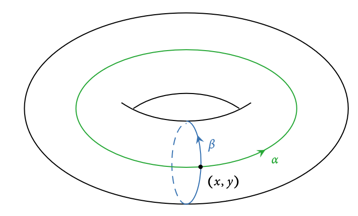
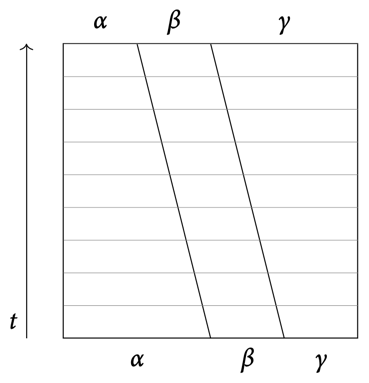
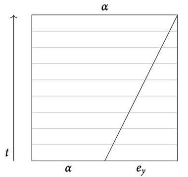
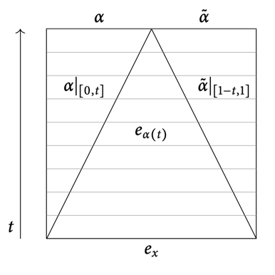
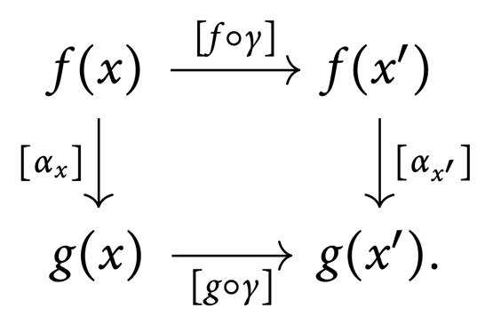

9 The fundamental group
Path homotopies
Definition 9.1
Path homotopy
A path in \(X\) from \(p\) to \(q\) is a continuous map \(\gamma : [0, 1] \to X\) with endpoints \(\gamma(0) = p, \gamma(1) = q\).
For \(x\in X\), the constant path is \(e_x : s \mapsto x\).
A loop is a path \(\gamma : \gamma(0) = \gamma(1)\). \(\gamma(0)\) is called the base point.
A pth homotopy is a homomomorphism of paths relative to \(A = \{0,1\} \subset [0, 1]\)
Remark 9.2
There is a homotopy of paths
of paths \(\gamma_0, \gamma_1 : p \leadsto q\). Writing \(\gamma_t := H(-,t) : [0,1] \to X\), we require that
for all \(t\in [0, 1]\).
Example 9.3
we can identify arbitrary loops with maps \(S^1 \to X\).
Consider for example the map \(S^1 \to S^1, z \mapsto z^k\):
- it is a loop for all \(k\in \Z\).
- it is a path, but not a loop for all \(k\in\R\setminus\Z\).
Let \(T = S^1 \times S^1\) be a torus and \((x,y) \in T\). Consider tha maps
These are loops \(S^1 \to T\) in the torus that are not path-homotopic.

Concatenation of paths
Definition 9.4
Concatenation of paths
The concatenation of the paths \(\alpha : x \leadsto y, \beta : y \leadsto z\) is
This is continuous by the pasting lemma.
Remark 9.5
Let \(\alpha \simeq \alpha' : x \leadsto y, \beta \simeq \beta' : y \leadsto z\) be path homotopies. Then, we have
So concatenation is well-defined on equivalence classes of paths:
Theorem 9.6
Algebraic properties of path concatenation
\(\begin{align*} \text{Let } & \alpha : x \leadsto y \\ & \beta, \gamma \text{ be paths in } X \end{align*}\)
1. Associativity:
The concatenation \([\alpha] * ([\beta] * [\gamma])\) is well-defined \(\iff\) \(([\alpha] * [\beta]) * [\gamma]\) is well-defined.
In that case, they are equal:
2. Left and right identity:
For \(z\in X\) let \(e_z : [0,1] \to X\) be the constant path at \(z\). Then
3. Inverse:
Define the path
Then, we have
Proof
A homotopy from \(\alpha * (\beta * \gamma)\) to \((\alpha * \beta) * \gamma\) can be sketched as follews:

Fro the right identity, a homotopy from \(\alpha * e_y\) to \(\alpha\) can be sketched as follows:

For the left identity, mirror the picture.
A homotopy from \(e_x\) to \(\alpha * \tilde \alpha\) can be sketched as follows:

For the left inverse, exchange the roles of \(\alpha\) and \(\tilde \alpha\).
The fundamental group
Definition 9.7
Fundamental group
Let \(x \in X\). The fundamental group \(\pi_1(X, x)\) of \(X\) based at \(x\) is the group of path-homotopy classes of loops based at \(x\):
with group operation \(*\) given by concatenation of paths.
Example 9.8
Define the map
Then, we have \(\gamma_k * \gamma_1 = \gamma_{k+1}\), so this gives a group homomorphism
We will later show that this is an isomorphism.
In \(\R^n\), every looå is nullhomotopic, so \(\pi_1(\R^n, x)\) is trivial for any choice of base point \(x\).
Similarly, \(\pi_1(S^k,x)\) is trivial for \(k\geq 2\). This is not trivial, as there are space-filling loops in \(S^k\).
Recall the two essential loops \(\alpha, \beta\) in the torus from E.9.3.
- Both give non-trivial elements in the fundamental group.
- \(\alpha * \beta \simeq \beta * \alpha\)
- This is unusial. The fundamental group is in general not commutative.
The fundamental groupoid
Definition 9.9
Fundamental groupoid
Let \(X\) be a topological space. Its fundamental groupoid \(\Pi(X)\) is the groupoid defined by
- objects: points of \(X\)
- morphisms: homotopy classes of paths
- composition: concatenation of equivalence classes of paths
Remark 9.10
\(\Pi(X)\) is a groupoid. It follows from T.9.6:
- Compositions of morphisms are well-defined R.9.5.
- Composition of morphisms is associative.
- For every object \(x\), we have by an identity morphism \(e_x\).
- Every morphism has an inverse.
Remark 9.11
The isomorphism classes of objects in \(\Pi(X)\) are exactly \(\pi_0(X)\):
The automorphisms of a point \(x \in X\), viewed as an object in \(\Pi(X)\), (isomorphisms from \(x\) to itself) are
Isomorphic objects in any category have isomorphic groups of automorphisms.
Lemma 9.12
Change of base point
Let \(\alpha : x \leadsto y\) be a path in \(X\). The map
is a group isomorphism. The assignement \(\alpha \mapsto \psi_\alpha\) defines a functor \(\Pi(X) \to \bm{\operatorname{Grp}}\).
Proof
Let \(\hat\alpha : s \mapsto \alpha(1-s)\) be the reverse path of \(\alpha\). Then, \(\psi_{\hat\alpha}\) is the inverse of \(\psi_\alpha\).
Remark 9.13
The particular isomorphism \(\psi_\alpha\) depends on the chosen path \(\alpha\).
Corollary 9.14
Base point independence
Let \(X\) be a path-connected topological space. Then, the fundamental group \(\pi_1(X, x)\) is independent of the choice of base pooint \(x\) up to a non-unique isomorphism.
Remark 9.15
For all \(x\in X\), the fundamental group \(\pi_1(X, x)\) is a full subcategory of the fundamental groupoid \(\Pi(X)\).
The embedding of \(\pi_1(X, x)\) into \(\Pi(X)\) thus defines a fully faithful functor. \((\Hom_{\pi_1(X, x)}(x,x) \xrightarrow{\sim} \Hom_{\Pi(X)}(x,x))\)
If \(X\) is path-connected, this functor is also essentially surjective. Hence it is an equivalence of categories.
Therefore, the fundamental groups and the fundamental groupoid are equivalelce invariants of the path-connected spaces.
The fundamental groupoid encodes more explicit information:
- For arbitrary spaces, it contains all fundamental groups of path-components.
- For different different base points of a component, it contains the explicit isomorphisms induced by paths between the base points.
Proposition 9.16
Functoriality of the fundamental groupoid
\(\begin{align*} \text{Let } & f : X \to Y \text{ be a continuous map} \\ & \alpha : x \leadsto y \text{ be a path in } X \end{align*}\)
Then, \(f \circ \alpha : f(x) \leadsto f(y)\) is a path in \(Y\).
This assignment is compatible with concatenation, meaning that
is a morphism of groupoids (a functor).
With this assignment, the fundamental groupoid becomes is a functor
Proof
\(\begin{align*} \text{Let } & x, y, z \in X \\ & \alpha : x \leadsto y \\ & \beta : y \leadsto z \end{align*}\)
Additionally, we have \(f_*(e_x) = [f \circ e_x] = [e_{f(x)}]\).
Corollary 9.17
In particular, we get a group homomorphism
If \(f\) is a homeomorphism, then \(f_*\) is an isomorphism of the fundamental groups.
Homotopy invariance
Proposition 9.18
Induced homomorphism of homotopic maps
Let \(H\) be a homotopy between maps \(f, g : X \to Y\). Further, let \(x\in X\), and define the path \(\alpha_x : t \mapsto H(x,t) \in Y\). Then, we have
and for every \([\gamma] \in \pi_1(X, x)\), we have
If \(H\) is a homotopy relative to \(\{x\}\), then \(f,g\) induce the same homomorphism of fundamental groups.
Proof
?
Corollary 9.19
If \(f : X \to Y\) is a homotopy equivalence, then \(f_*\) is a group isomorphism. Furthermore, \(\pi_1(X, x)\) is a homotopy invariant of pointed spaces.
Contractible spaces have trivial fundamental groups.
Example 9.20
\(\R^n\) ha trivial fundamental groups for any base point. Any star-shaped region has a trivial fundamental group.
For \(n \ge 2, x \in S^n\), we have \(\pi_1(\R^{n+1}\setminus\{0\}, x) \cong \pi_1(S^n, x)\), which is trivial.
Proposition 9.21
Homotopic maps and groupoids
Let \(H\) be a homotopy between \(f, g : X \to Y\).
Then, \(H\) induces a natural isomorphism of the functors
Proof
Let \(a_x : t \mapsto H(x,t) \in Y\) for any \(x\in X\). Then, \(([a_x])_{x\in X}\) defines a natural transformation \(\Pi(f) \Rightarrow \Pi(g)\quad(i)\).
The morphism \([\gamma] : x \to x'\) in \(\Pi(X)\) is a path-homotopy class, represented by \(\gamma : x \leadsto x'\).
The morphisms \(\Pi(f)([\gamma]), \Pi(g)([\gamma])\) are represented by \(f \circ \gamma, g \circ \gamma\).
So, by \((i)\), the following diagram commutes:

In other words, \(f\circ \gamma * \alpha_{x'} \simeq \alpha_x * g \circ \gamma \rel \{x,x'\}\). The morphisms of a groupoid are isomorphisms, so we have a natural isomorphism.
Corollary 9.22
\(f : X \to Y\) is a homotopy equivalence \(\implies \Pi(f) : \Pi(X) \to \Pi(Y)\) is an equivalence of categories.
In particular, contractible spaces have have trivial fundamental groupoids.
Definition 9.23
Simply connected
A topological space \(X\) is simply connected if it is path-connected and has trivial fundamental groups:
- \(\pi_0(X)\) is trivial
- \(\pi_1(X, x)\) is trivial for all \(x\in X\).
Equivalently, the fundamental groupoid is equivalent to the trivial groupoid.